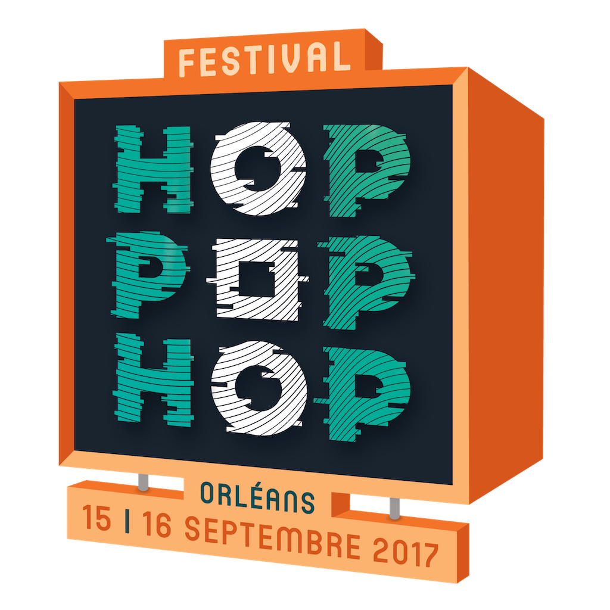

Orléans / 15 - 16 Septembre 2017
Annonce de la programmation le 1er juin à l'Astrolabe Orléans !
Infos et contact : contact@hoppophop.fr
Annonce de la programmation le 1er juin à l'Astrolabe Orléans !
Infos et contact : contact@hoppophop.fr